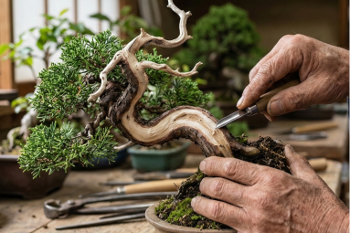
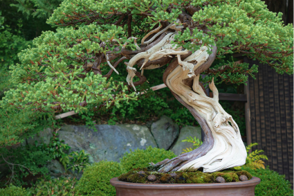
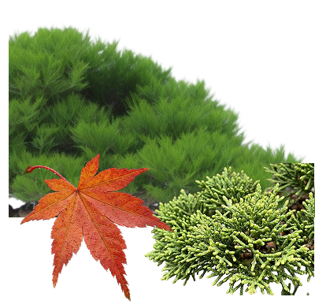
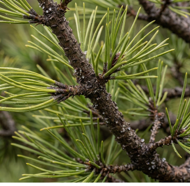
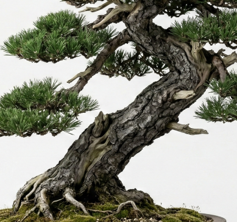
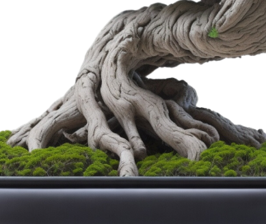

（ 神と舎利 ジン／シャリ ）
「神」は枝が枯れた状態のもの、「舎利」は幹が枯れた状態のものを指す。
歳月を経た松や真柏では、樹木の一部が枯れたあと形を残したまま、白い肌を見せることがある。
人間の手でそれを表現し、緑の葉と白い肌のコントラストを生み出すことで、盆栽により深みと美しさをもたらす。


生きる芸術の全貌を解析。
そのDNAを構成する要素とは―
語源的には「盆（鉢）」に「栽（植える）」こと、すなわち「鉢に植えられたもの」を意味する。
盆栽の目的は、野外で見られる大自然の風景や老木の姿を小さな鉢の中に切り取り、縮小して再現することにある。
それは単なる自然の縮小模型ではなく、樹木の成長や老い、再生といった、自然の美しさ、厳しさ、雄大さ。
つまり、盆栽は

盆栽の葉は、特定の1種類の形があるわけではなく、樹種ごとにかなり特徴が異なる。季節によって色や姿が変化する葉は、四季の移ろいを感じさせる。また盆栽では、葉刈りや芽摘みといった手入れによって葉を小さく整えることがある。
こうした葉の形や変化が、盆栽に自然の美しさと奥深い表情を与えている。

枝は、木の個性や動きを表現する重要な要素。 例えば、クロマツは力強く曲がる枝で風格を生み、ケヤキは細かく広がる枝で繊細な美しさを見せる。枝は年月とともに太くなり、まるで自然の中で育った大木のようなた力強さを表現する。剪定や針金掛けによって枝の流れを整え、長い時間をかけて美しいシルエットをつくり出すのも醍醐味にのひとつである。その枝ぶりが、小さな鉢の中に壮大な自然の景色を描き出す。

木の力強さや年月を感じさせる、盆栽にとって最も重要ともいえる幹。ゆるやかな曲線や傾きによって、風や自然の影響を受けて育った姿を表現する。太く荒々しい樹皮を持ち、長い時間を生きてきた風格を感じさせるもの。しなやかに柔らかく、生命の躍動感を感じさせるもの。剪定や針金掛けによって幹の流れや姿を整え、盆栽全体に力強さと奥深い美しさをもたらす。

根は木が大地にしっかりと根付く安定感を表現する。 地表に現れる根は「根張り」と呼ばれ、盆栽の美しさを左右する重要な見どころのひとつ。例えば、ケヤキは四方に広がる力強い根張りが魅力とされている。植え替えの際に根を整えながら、自然で美しい広がりをつくる。その根の姿が、小さな鉢の中に大地とつながるような力強さを感じさせる。
「神」は枝が枯れた状態のもの、「舎利」は幹が枯れた状態のものを指す。
歳月を経た松や真柏では、樹木の一部が枯れたあと形を残したまま、白い肌を見せることがある。
人間の手でそれを表現し、緑の葉と白い肌のコントラストを生み出すことで、盆栽により深みと美しさをもたらす。


鉢は単なる植物を育てるための容器ではなく、樹木と美術的に調和し、ひとつの世界観を創り出すための重要な額縁となる。
焼き方や鉢の形、大きさによって盆栽全体の印象は大きく変化し、鉢・樹木・空間の三位一体を楽しむことも、盆栽の魅力である。